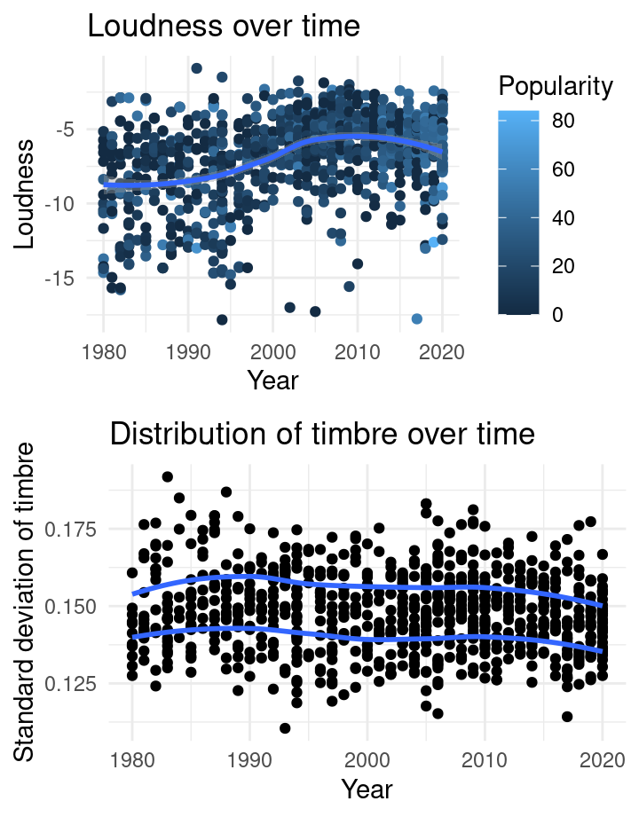
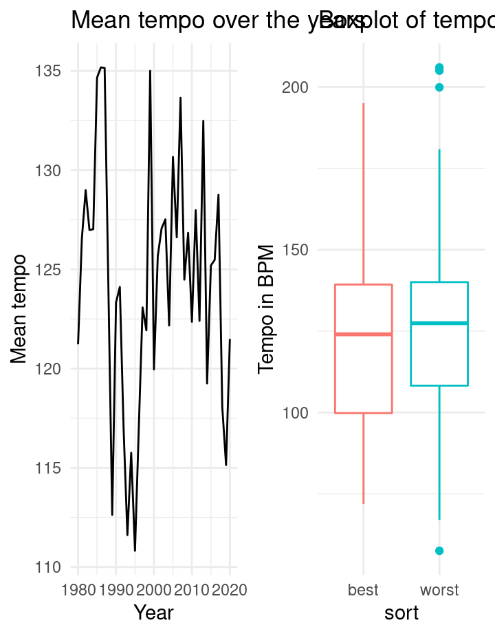
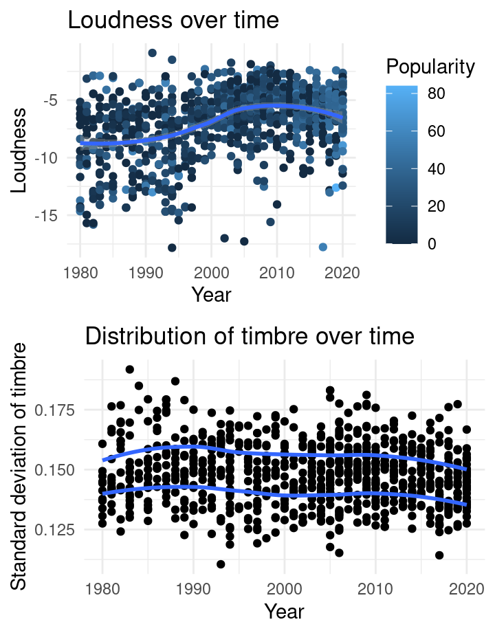
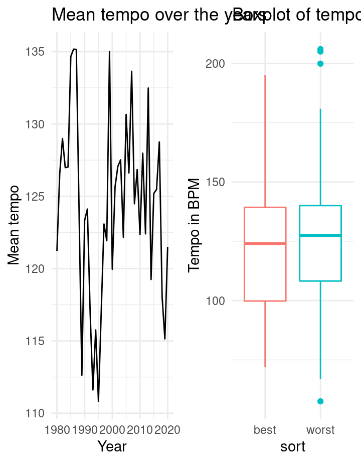
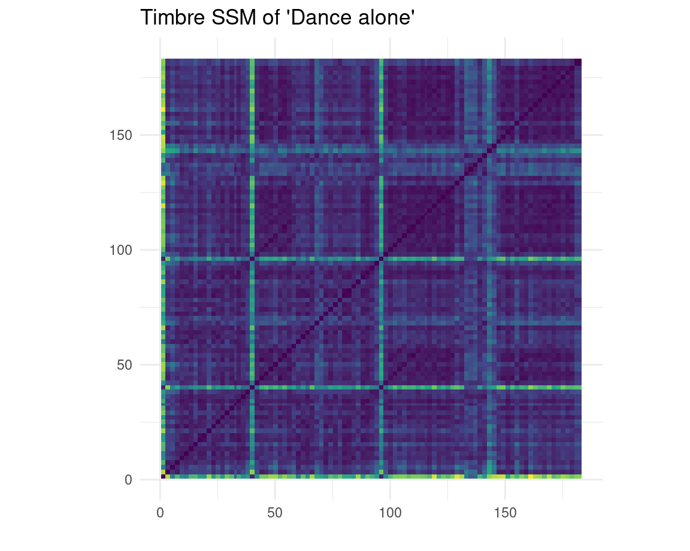
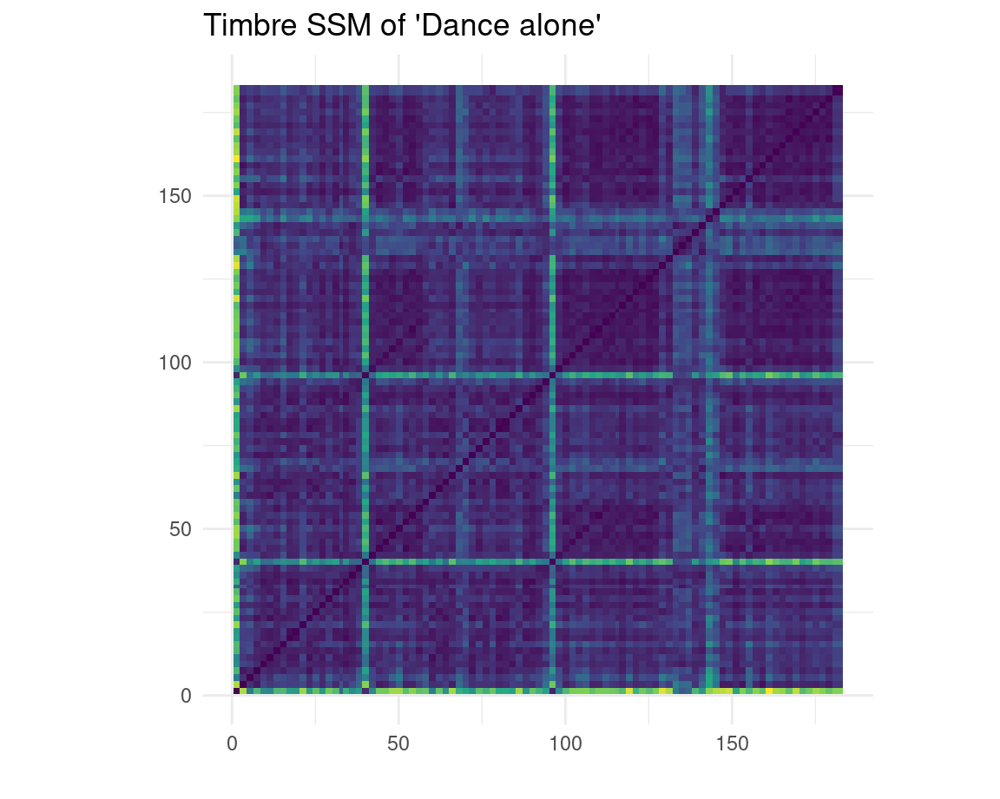
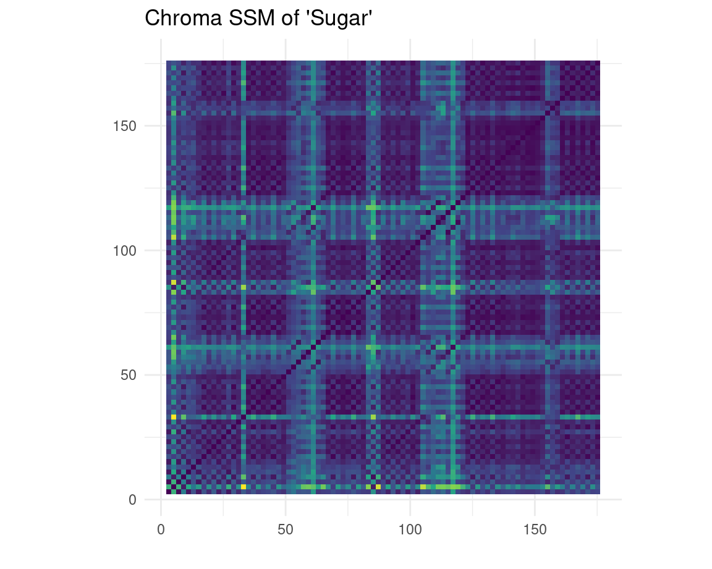
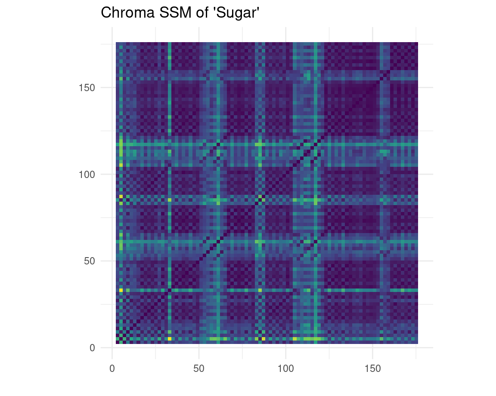
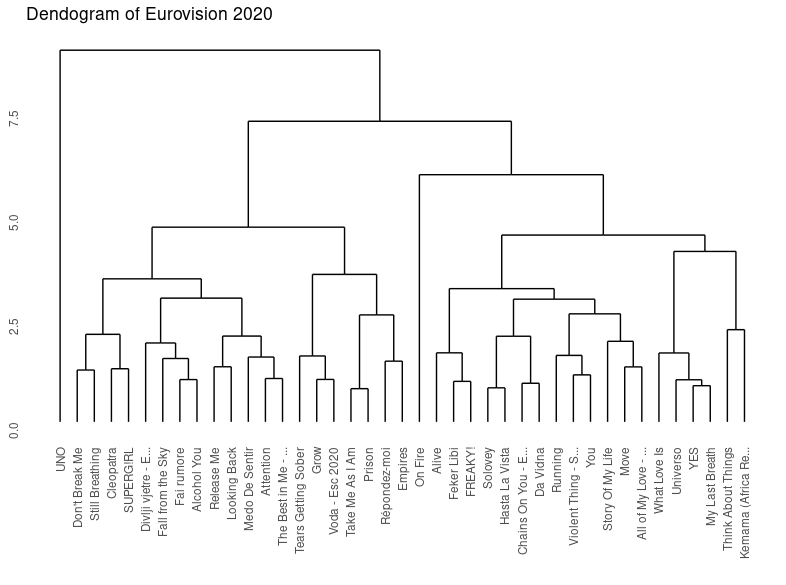

Introduction: Sonfestival trough time
Katinka
My little sister is named after the song Kleine Kokette Katinka by the Spelbrekers. This Dutch song, Netherlands submission for the Eurovision song contest in 1962, was the first song ever in the history of Eurovision to receive 0 points. I always thought this was very funny, and teased my sister with it. The video clip of Kleine Kokkete Katinka (shown on the right) always interested me: Eurovision has changed a lot since then.
Eurovision
Since 1956, the Eurovision song festival has been held every year (apart from 2020), making it the longest-running annual international televised music competition and one of the worlds longest-running television programmes. What do you need to compete as a country? An original song of three minutes or less, to be performed live by an artist or group. This results in a wide variety of songs every year, which makes Eurovision a very interesting event to analyse musically.
My questions are the following: are there trends in the Eurovision songs over time? And is it possible to device a global trend in music based on this? Is there a magic formula for making a successful and maybe even winning track?
Corpus
To do this, a corpus has been created containing the songs from the grand finale of Eurovision from 1980-2020, which sums up to 965 songs in total. I will try to find the answers to these questions analyzing this corpus using the Spotify API. The Spotify API keeps track of various music features, like valence, danceability, energy and much more.
What stands out about the corpus is the variety in the songs. These range from beautiful calm jazz waltzs like Amar pelos dos by Salvador Sobral (winner of 2017) to Hard Rock Hallelujah, a, as the name might suggest, hard rock song performed by Lordi (winner of 2007).
Besides looking into the trends in Eurovision songs, I am also interested in seeing if the development in Eurovision music is similar to the development of music in general. Research shows that over time the timbral palette gets more homogeneous, pitch transitions get more restricted and levels of loudness grow (Serr, Corral, Bogu, Haro, Arcos, 2012).
A link to the corpus is available on the last tab.
Trends in Eurovision
Overview
Before we can start with a depth analysis, it might be nice to get an overall look of Eurovision and some of the track-level features from the Spotify API. This first plot serves as an overview of the global trends in Eurovision songs. The means of the Spotifys API features acousticness, danceability, energy and valence are shown over time. The fun thing about Eurovision is that it is very well documented, and the effect of historical events or choices could show in the graphs. I will try to give my own interpretation or explanation of the noteworthy things in this graph.
A few things that stand out about this graph:
- There is a drop in acousticness around 1999;
- In 1995 there seems to be a drop in acousticness, danceability and energy;
- The energy seems to be gradually going up, while valence seems to be going down.
The drop in acousticness
Around 1997 - 1999 the acousticness of Eurovision songs drops fast. This can be explained by a change in the rules of Eurovision. A live orchestra was a prominent feature of Eurovision from 1956-1998. In 1973 pre-recorded backing tracks were also allowed, but only if the instruments could still be seen playing on stage. In 1997 it became allowed to pre-record all instrumental music, but the host country was still required to provide a live orchestra. From 1999, even the orchestra became optional, and as a cost-saving measure, 1999 therefore became the first ver Eurovision without an orchestra, meaning all the instrumentals were pre-recorded. Present day all instrumentals have to be pre-recorded, with only the singing remaining live (Wikipedia, 2022). Its very nice to see how the history of Eurovision can be seen in the statistics of just a simple line plot.
1995
I have not found an explanation for the drop in valence, energy and danceability in 1995.
Increasing energy, decreasing valence
A subtle increase in energy can be seen in the graph over time. I would attribute this to changing popularity in music styles. The UK was the first country ever to enter the contest with a rap song called Love City Groove in 1995. Since then, new and more extreme musical styles are seen on Eurovision. Examples of this are Toy by Netta, which won in 2018 or, one of my personal favorites, SHUM by Go_A in 2021.
I have not found an explanation for the decrease in valence.
The typical Eurovision song

 
 

Generic
Now that we know a bit about the big lines in Eurovision, it might be nice to zoom in on Eurovision songs themselves. Over the years, there has been a lot of critique on the quality and producing of the Eurovision songs. Many songs entering the Eurovision song contest past years have been written by teams of international singer-songwriters just for the purpose of winning Eurovision, instead of an artists making their own song. At the 2001 contest, not one single entry was written with the involvement of foreign songwriters. In 2021 however, twenty-two songs were written with help from abroad (Keith, 2022). Numerous singer-songwriters even wrote multiple songs for the same edition of Eurovision, with a record of three songs for by the same writer in one year.
Many people feel like a great part of the Eurovision songs have become generic and dont reflect the countries and artists anymore. I have singled out three Eurovision songs that have been written by international Eurovision singer-songwriter veterans and that the internet labeled as generic. The SSMs shown on the right are created using the features timbre and chroma, to see if the structure of the songs is similar to one another.
The SSMs are created for the folowing songs:
- Sugar by Natalia Gordienko for Moldova (2021), written by Dimitris
Kontopoulos;
- Gravity by Hovig for Cyprus (2017), written by G:son;
- Dance alone by Jana Bureska for North Macedonia (2017), written by
Borislav Milanov.
The creators of these songs have written many Eurovision tracks, with some having won 1st, 2nd or 3rd place.
Interpretation of the SSMs
What stands out in the SSMs are the big blocks of homogeneity, that are repeated multiple times, forming a checkerboard pattern. This can be seen in the chroma features as well as in timbre. Another thing that caught my eye was the low variance of timbre in the songs Sugar and Dance alone: the SSMs are relatively blue, meaning that there isnt much difference in use of different instruments throughout the song. In Gravity and Dance alone, a few yellow horizontal and vertical stripes are present, meaning that that moment in the song differs from the rest.
These repeated blocks of homogeneity can be one of the causes for the generic feelings of the song. The structure of the songs is simple and large parts (probably verses and choruses) are repeated. The instruments used dont show a wide range of variety, and there arent parts of the song that particularly stand out except short moments, denoted by the yellow horizontal and vertical lines.
Research in Eurovision
Now that weve looked at an overview using trends and zoomed in on some songs using SSMs, it might be interesting to if Eurovision follows the same trends as music in general. Research shows that over time the timbral palette gets more homogeneous, pitch transitions get more restricted and levels of loudness grow in music (Serr, Corral, Bogu, Haro, Arcos, 2012). Does this apply to Eurovision as well?
Loudness
As we can see in the plot on the right, the levels of loudness do in fact grow in Eurovision. As far as I could find, there arent any restrictions on the loudness of recording of Eurovision songs. However, when performed live during the Eurovision contest, the volume is kept the same for all songs, so it wont have influence on the voting. The increase of loudness even has its own nickname: the loudness war. This loudness war has been going on since the 1940s, when songs that were louder on a jukebox would stand out more compared to the rest (Wikipedia, 2022).
Timbral palette
In the lower plot on the right, the standard deviation of timber per song has been plotted for every year. The to lines show the first and third quartile, which gives an indication of the distribution of data. The lines dont move farther away from each other in time, meaning that the width of the distribution of timbre doesnt get smaller over time. In less statistical terms: the timbral palette does not get more homogeneous over time in Eurovision songs. Eurovision songs differ on this point from general music.
Who will win? Predicting using tempo
Returning to the main question of this analysis: is it possible to predict if a song is successful or not on Eurovision. Our last analysis showed that Eurovision doesnt always follow the same trends as general music does. Which music is popular universally could be an indication of what kind of song would be popular on Eurovision, but it doesnt have to be. Another way of predicting this is using all previsous succesful and unsuccessful songs and see if there is causality in track features. Before we start with the all features, it might be nice to zoom in on one. Lets look at tempo. The tempo of Eurovision songs has been analyzed in two ways: over time and between successful and unsuccessful Eurovision songs.
Over time
In the line plot the development of mean tempo over time is shown. No clear trend is visible: the mean tempo variates but does stay neatly between 110 and 135 BPM, which is the average tempo of music in general.
Between successful and unsuccessful songs
The boxplot shows the distribution of tempi of the highest and lowest 5 scoring Eurovision songs of all years. The tempo doesnt seem to differ a lot between groups. We can therefore conclude that tempo is not a distinguishing feature between succesful and unsuccesful Eurovision songs.
Can we predict a successful Eurovision track?
 
Now we have taken a look at the relation between one feature and of a song is succesful or not on Eurovision, we move on to the big work. Is it possible to predict if a song is successful or not on Eurovision based on all its features? To investigate this, different techniques where used.
Dendogram
First, a dendogram was created to see how similar songs were, based on the Spotify track features from one year of Eurovision. The top 5 consisted out of the songs Think about things, Fai Rumore, UNO, Move and YES. The lowest 5 consisted out of Da Vidna, FREAKY!, YOU, Prison and Divli Vietre. It is clear from the dendogram that the top 5 or lowest 5 songs arent really similar to each other. UNO, which ended third, is very different from the all other songs. Divli Vietre, which ended in last place, is rather similar to Fai Rumore, which ended second. The same thing goed for You and Move. This dendogram only shows similarity for one year, but could give some insight in what to inspect when analyzing all years: making predictions on classes that arent very similar to one another might not give the best results.
Random Forest
To analyze all years, two playlists were made containing the top 5 best or worst scoring songs for each year. These playlists were used to make a random forest model, which is a machine learning method that makes decision trees based on which features are most important for the categorization and uses these decision trees to classify a song as successful (belonging to top 5) or unsuccessful (belonging to lowest 5). The most important features were A, tempo, acousticness and timbre component 4. For class successful as well as unsuccessful, the precision was around 0.5, meaning that the model was able to classify a song correctly around 50% of the time. This means that the model works roughly as well as randomly assigning the songs to one of the classes. On the right, a visualization is shown based on some of the more important features: it is clear that there is a huge overlap between the two classes, so it is not weird that the model wasnt able to make sound predictions.
Who will win in 2020?
Non-political
We have seen in the past analysis that we cant predict if a song is succesful or not in Eurvision based on the Spotify track features. However, not only the track features attribute to which song score high and which dont. Another factor is politics. The Eurovision song contest aims to be of a non-political nature. Performers are precluded from promoting or referring to anything political or commercial, and could be disqualified because of it. However, political relations and tensions between countries tend to be reflected in performances and in voting (Wikipedia, 2022).
Stefania
An example of this is the huge popularity of the song Stefania by KALUSH, which is Ukraines submission for this years Eurovision song festival. The lyrics are non-politic, but can be seen as a metaphor for the war between Russia and Ukraine. The mother in the song is being askes to sing a lullaby, so everything becomes alright again. When interpreting the mother in the song as Mother Ukraine, the song could be a plea for the end of the war. The song has become a characterizing for the Ukraine resistance against the Russion invasion and is popular in the hitlists of Poland, Moldavia, Lithuania and is a big hit on TikTok. Bookmakers have predicted that Ukraine has the biggest chance to be the winner of the Eurovision song festival 2022 with 35%.
Stefania mama, mama Stefania
The field is blooming and its turning gray
Sing me a lullaby, mama
I want to hear your native language
Keygram
On the right a keygram is shown of the song. There song is nicely divided into seven parts, with the structure A B C B D A C. Here A is the refrain, from which the lyrics are shown above. Part B consists of rap. C is instrumental and contains traditional Ukrainian instruments. Part D, the bridge, is an old Ukrainian lullaby.
Conclusions
In the end, weve concluded that it is not possible to predict if a song is going to win Eurovision or not based on its track features. However, bookies still do a good job at predicting winners based on their own feeling of the song and other factors, like political ones. I am rather glad with this conclusion: if it would be so easy to find out what the perfect features of a successful Eurovision song were, all Eurovision songs would converge into the same generic form. It also shows the diversity of Eurovision: the songs that win are very different from one another and show a wide variety of music genres. Lastly, it also shows that a computer cant predict everything and that sometimes just plain listening to a song is more valuable than a whole statistical analysis.
Eurovision
Corpus
The playlists for the corpus can be found on this profile: https://open.spotify.com/user/ciletjeeh?si=f650ea8d5b90460f and are ordered per year.
Sources
Serr, Joan, lvaro Corral, Marin Bogu, Martn Haro, and Josep Ll. Arcos. 2012. Measuring the Evolution of Contemporary Western Popular Music. Scientific Reports 2: 521.
Wikipedia contributors. (2022, February 21). Rules of the Eurovision Song Contest. Wikipedia. https://en.wikipedia.org/wiki/Rules_of_the_Eurovision_Song_Contest
Keith, E. (2022, February 15). Eurovision 2020: A breakdown of foreign composed songs. Wiwibloggs. https://wiwibloggs.com/2020/03/28/eurovision-2020-foreign-composed-songs/252694/
Wikipedia contributors. (2022, 17 maart). Political controversies in the Eurovision Song Contest. Wikipedia. Geraadpleegd op 30 maart 2022, van https://en.wikipedia.org/wiki/Political_controversies_in_the_Eurovision_Song_Contest
NOS. (2022, 23 maart). Oekraens strijdlied van de oorlog maakt grote kans op winst Songfestival. Geraadpleegd op 30 maart 2022, van https://nos.nl/collectie/13888/artikel/2422422-oekraiens-strijdlied-van-de-oorlog-maakt-grote-kans-op-winst-songfestival
Wikipedia contributors. (2022a, februari 28). Loudness war. Wikipedia. Geraadpleegd op 3 april 2022, van https://en.wikipedia.org/wiki/Loudness_war